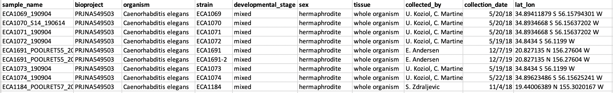

Uploading WI FASTQ sequence data to SRA¶
For each CaeNDR release, it is important to also upload the FASTQ files to NCBI's Sequence Read Archive (SRA). If a bioproject already exists, you can create a new submission and link to the previous bioproject. If there is no previous bioproject, you can create a new bioproject and add all relevant data. See below for more instructions.
SRA submission¶
- Begin submission
- In the SRA submission portal, click the button for "New submission" and follow the prompts.
- Remember to add the previous bioproject ID if applicable to link this submission to previous submissions.
- Select "Model organism or animal" for biosample type, select "upload file using excel" and download the template
- Create biosample sheet (an example can be found below)
- An easy starting point here is the sample sheet used for
alignment-nf. You will keep the id as the sample name (unique identifier) and strain (note strain also needs to be unique - if there are multiple library preps for the same strain, please append "-2" etc. to the strain) - To these two columns, you can add bioproject, organism, developmental stage, sex, and tissue (same across all strains)
- Finally, join this data with the WI species master sheet to get collected by, collection date, and latitude/longitude. - Note: latitude/longitude need to be converted into one shared column in the format "34.89 S 56.15 W" (+ refers to North and East)
- Copy the data into the relevent columns in the template, save, and upload to the submission portal 
- Create SRA metadata sheet
- Again, select "upload a file using excel" and download the template
- An easy starting point here is, again, the sample sheet used for
alignment-nf. You will keep the id as the sample name and the lb as library id. You will also keep fq1 and fq2 for filename and filename2. - You will then add the rest of the columns as shown below. Note: the formatting is very specific for this sheet. The title can be found on the bioproject page. The instrument_model can be found by using the "sequencing_folder" (not shown, but part of the original sample sheet) and looking up the instrument that folder was run on in the Sequencing Runs google sheet (here)
- Copy and paste the rows from this file into the template to check for correct formatting. Then save the tab as a tsv and upload to the submission portal.

- Pre-upload FASTQ files using FTP
- Create a list of files to upload to the FTP server by combining the filename1 and filename2 from the SRA metadata sheet (above).
- Begin submission by creating an NCBI account (or signing in -- personal account). Then follow the link to the SRA submission portal
- Follow the instructions under the "FTP upload":
# establish FTP connection from terminal (on QUEST!)
# ftp <address>
ftp ftp-private.ncbi.nlm.nih.gov
# navigate to your account folder (i.e.)
cd uploads/kathrynevans2015_u.northwestern.edu_YSlKSXQ4
# create new folder for submission (i.e.)
mkdir 20210121_submission
# exit FTP connection
exit
# back on quest, run the following line to transfer every file with path listed in "files_to_upload.tsv" to that folder
# make sure to change your upload folder and files to upload
module load parallel
parallel --verbose lftp -e \"put -O /uploads/kathrynevans2015_u.northwestern.edu_YSlKSXQ4/20210121_submission {}\; bye\" -u subftp,w4pYB9VQ ftp-private.ncbi.nlm.nih.gov < files_to_upload.tsv
Note: it is important that this step is completely finished before you complete your SRA submission
- Complete submission
- When finished, in the SRA portal you will be asked to select which folder you want to pull files from
- Review and submit! If there are any issues they will let you know.
List of current bioprojects associated with the Andersen Lab¶
- C. elegans WI genome FASTQ - PRJNA549503 (link here)